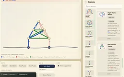
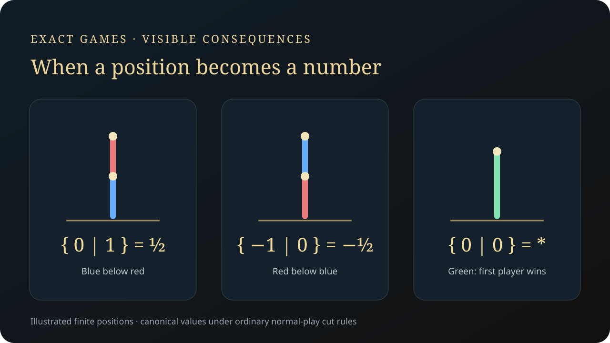

Hackenbush Lab
Draw and cut red, blue and green positions, then inspect canonical game forms, component sums and structural reductions. Exact finite-game analysis distinguishes surreal numbers from nimbers and fuzzy games.
Explore connections
Open the application, then follow what changes
Draw a position, cut an edge and inspect the game that remains. Exact finite-game analysis connects colored graphs to canonical forms, component sums, surreal numbers and nimbers, while keeping altered rules and exploratory infinite examples distinct.
-
01
Build a position
Choose colored edges, supports and the applicable cut rules.
-
02
Explore the options
A cut removes unsupported structure and changes the next legal moves.
-
03
Reduce the game
Compute recursive options, canonical forms and supported structural reductions.
-
04
Compare and combine
Inspect sums and why a game value need not be a number.
Simple cut rules, subtle strategic consequences
Hackenbush is a deterministic game with complete information. Blue cuts blue edges, Red cuts red edges, and either player may cut green. Ordinary edges lose support and fall when no path to the ground remains. A small change in that graph can change the strategic value of the whole position.
The interface links the visible cut to the remaining legal options. Play tests the consequence of a move; Create changes the graph; Position Analysis and Live reasoning connect those decisions to the game’s mathematical form.
A game value is not always a number
The finite engine builds recursive left and right options, compares games and reduces their canonical forms. BigInt-backed rational arithmetic extracts an exact surreal number when the position meets the number conditions. Other positions remain nimbers, infinitesimals or general short games rather than being forced onto a numerical scale.
Component sums and move comparisons make those distinctions usable. For example, a single green edge has value star: either player can move to zero, but star itself is not the number zero. The board and reasoning views expose that difference directly.
Use graph structure before expanding every move
For supported all-green positions, a specialized fusion path reduces cyclic structure and combines branches through nim-values. It records the reduction steps so that the faster structural computation can also serve as an explanation.
General supported finite positions use memoized, bounded recursive search. Heavier studies can run in a module worker that streams progress and preserves BigInt values through structured cloning. Deterministic canonicalization and independent finite-game checks make the displayed answers testable.
Keep the rules attached to the answer
Stable no-fall anchors deliberately change the ordinary game, so the fusion and misère modules exclude them. Supported misère boards are analyzed as whole positions; normal-play component addition is not silently reused under the last-move-loses rule.
The library separates loadable boards from pattern-modeled references. Infinite and loopy examples are valuable illustrations, but their stated support differs from the exact finite engine. The status page explains those distinctions alongside the current thermal-analysis limits.

Recorded examples · 3Positions, moves and game valuesFinite and infinite examples connect the colored graph to its mathematical value.＋
More recorded views · 1

Current scope
- Exact finite analysis is bounded by search limits: the default engine budgets are 12,000 positions and 12,000 sums. Completing an unsupported or oversized search is not guaranteed.
- Stable/no-fall edges are a nonstandard extension. Infinite and loopy examples include modeled references and heuristic warnings rather than a general solver for those game classes.
- Thermal analysis is partial. The project should not be described as a general hot-game solver or every green position as having positive temperature.